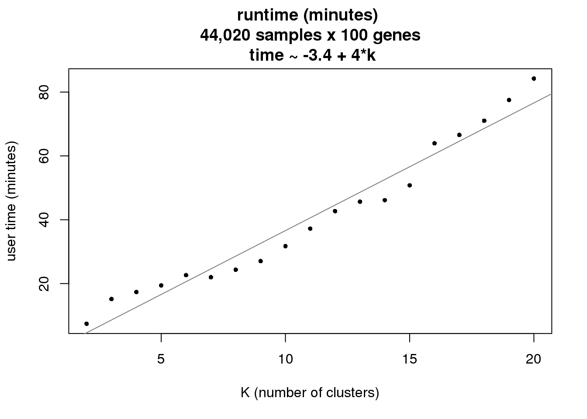

Last updated: 2018-11-20
workflowr checks: (Click a bullet for more information) ✔ R Markdown file: up-to-date
Great! Since the R Markdown file has been committed to the Git repository, you know the exact version of the code that produced these results.
✔ Environment: empty
Great job! The global environment was empty. Objects defined in the global environment can affect the analysis in your R Markdown file in unknown ways. For reproduciblity it’s best to always run the code in an empty environment.
✔ Seed:
set.seed(20181116)
The command set.seed(20181116) was run prior to running the code in the R Markdown file. Setting a seed ensures that any results that rely on randomness, e.g. subsampling or permutations, are reproducible.
✔ Session information: recorded
Great job! Recording the operating system, R version, and package versions is critical for reproducibility.
✔ Repository version: 9db4c82
wflow_publish or wflow_git_commit). workflowr only checks the R Markdown file, but you know if there are other scripts or data files that it depends on. Below is the status of the Git repository when the results were generated:
Ignored files:
Ignored: .Rhistory
Ignored: .Rproj.user/
Ignored: data/friedman2018/
Untracked files:
Untracked: analysis/code_friedman.Rmd/
Untracked: analysis/code_runtime.Rmd/
Untracked: output/runtime.Rmd/
With the ever-increasing throughput and resolution of single-cell technology, we need methods that are able to produce sensible results in a reasonable amount of time. Several factors come into place for the run time of CountClust:
Here we assess the runtime of CountClust, with an emphasis on runtime under varying K’s.
For 44,020 samples x 100 genes, takes approx. 80 minutes to run K=20. Also this was ran without the step of choosing between multiple starting points.
Next step is to look into making this process more efficient, possible through maptpx (OPENMP parallelization).
See /analysis/code_runtime.Rmd/* for codes.
#SBATCH --partition=broadwl
#SBATCH --account=pi-mstephens
#SBATCH --ntasks=1
#SBATCH --cpus-per-task=10
#SBATCH --mem-per-cpu=5GBres <- lapply(2:20, function(k) {
out <- readRDS(paste0("output/runtime.Rmd/countclust_allsamples_ngenes_100_nclust_",
k,".rds"))
data.frame(nclust=k,user=out$time[1],
system=out$time[2], elapsed=out$time[3])
})
res_bind <- do.call(rbind, res)
lm(res_bind$user/60 ~ res_bind$nclust)
Call:
lm(formula = res_bind$user/60 ~ res_bind$nclust)
Coefficients:
(Intercept) res_bind$nclust
-3.396 4.007 plot(x=res_bind$nclust,
y=res_bind$user/60,
xlab="K (number of clusters)",
ylab="user time (minutes)", pch=16, cex=.7,
main = "runtime (minutes) \n 44,020 samples x 100 genes \n time ~ -3.4 + 4*k")
abline(a=-3.4, b=4, col="gray50")
| Version | Author | Date |
|---|---|---|
| 9c46ed2 | Joyce Hsiao | 2018-11-20 |
sessionInfo()R version 3.5.1 (2018-07-02)
Platform: x86_64-pc-linux-gnu (64-bit)
Running under: Scientific Linux 7.4 (Nitrogen)
Matrix products: default
BLAS/LAPACK: /software/openblas-0.2.19-el7-x86_64/lib/libopenblas_haswellp-r0.2.19.so
locale:
[1] LC_CTYPE=en_US.UTF-8 LC_NUMERIC=C
[3] LC_TIME=en_US.UTF-8 LC_COLLATE=en_US.UTF-8
[5] LC_MONETARY=en_US.UTF-8 LC_MESSAGES=en_US.UTF-8
[7] LC_PAPER=en_US.UTF-8 LC_NAME=C
[9] LC_ADDRESS=C LC_TELEPHONE=C
[11] LC_MEASUREMENT=en_US.UTF-8 LC_IDENTIFICATION=C
attached base packages:
[1] stats graphics grDevices utils datasets methods base
loaded via a namespace (and not attached):
[1] workflowr_1.1.1 Rcpp_1.0.0 digest_0.6.18
[4] rprojroot_1.3-2 R.methodsS3_1.7.1 backports_1.1.2
[7] magrittr_1.5 git2r_0.23.0 evaluate_0.12
[10] stringi_1.2.4 whisker_0.3-2 R.oo_1.22.0
[13] R.utils_2.7.0 rmarkdown_1.10 tools_3.5.1
[16] stringr_1.3.1 yaml_2.2.0 compiler_3.5.1
[19] htmltools_0.3.6 knitr_1.20 This reproducible R Markdown analysis was created with workflowr 1.1.1